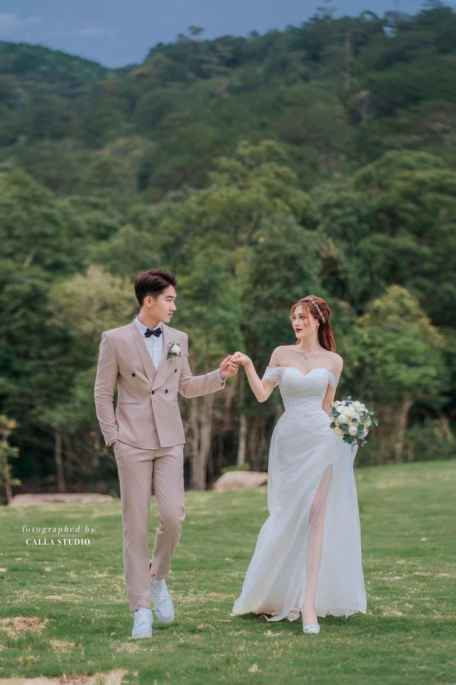
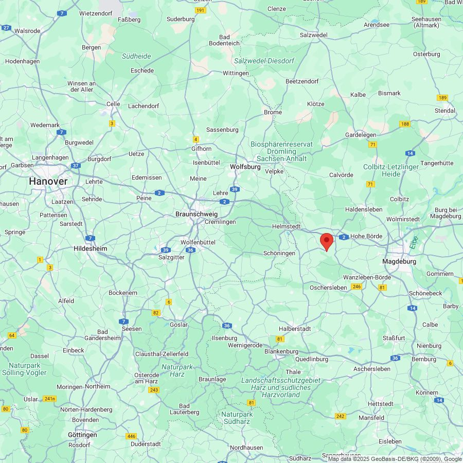
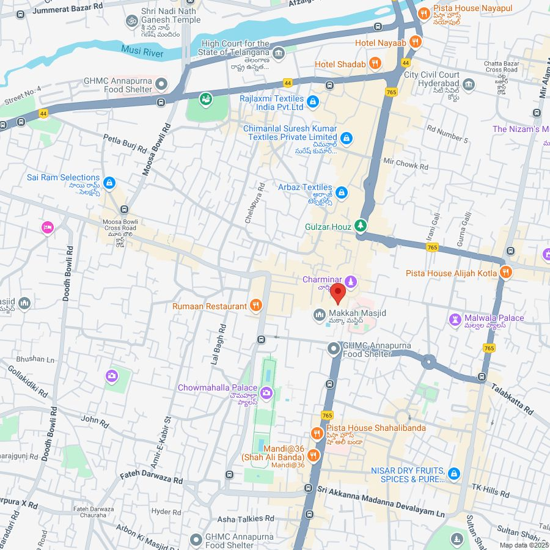
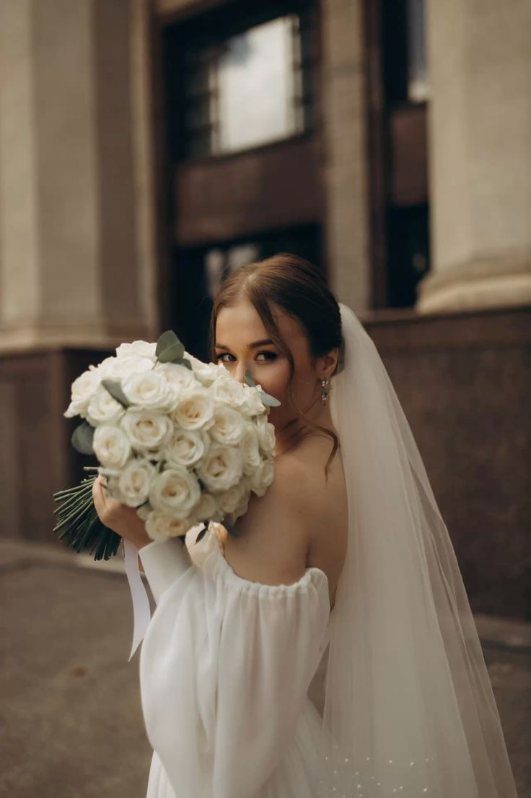
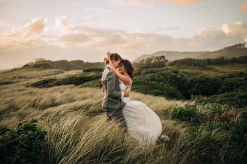
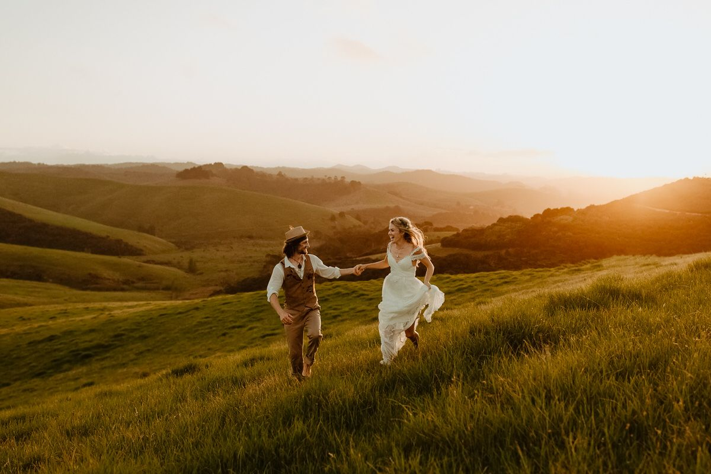
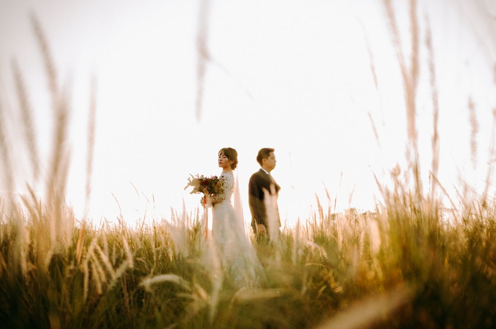
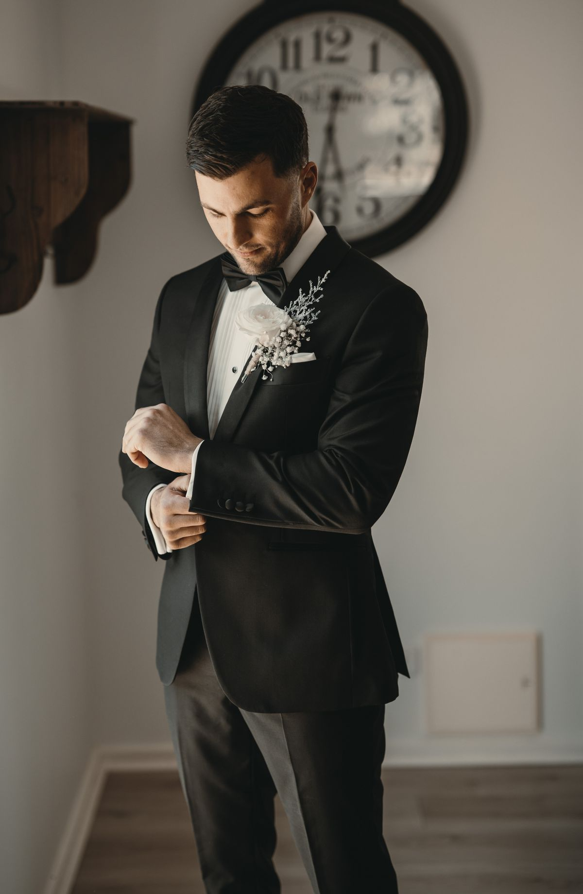

THE WEDDING OF
Justin & Siska
04 • MARET • 2026
Our Wedding
Selamat Datang
Atas Rahmat Tuhan Yang Maha Esa, kami bermaksud mengundang Anda di acara Kami. Merupakan suatu kehormatan dan kebahagiaan bagi kami sekeluarga, apabila Bapak/Ibu/Saudara/i berkenan hadir dan memberikan doa restu pada pernikahan kami.

Justin
Tobias Justin
Ayah Justin & Ibu Justin
Beralamat di Kota Jakarta


Siska
Siska Alimitt
Ayah Siska & Ibu Siska
Beralamat di Kota Jakarta
"Di antara tanda-tanda (kebesaran)-Nya ialah bahwa Dia menciptakan pasangan-pasangan untukmu dari (jenis) dirimu sendiri agar kamu merasa tenteram kepadanya. Dia menjadikan di antaramu rasa cinta dan kasih sayang. Sesungguhnya pada yang demikian itu benar-benar terdapat tanda-tanda (kebesaran Allah) bagi kaum yang berpikir."
- Ar-Rum - Ayat 21 -

Resepsi Pernikahan
Rabu, 04 Maret 2026
Waktu: Jam Bebas / Fleksibel
Lokasi Kediaman:
Rumah Kediaman Resmi Justin di Jakarta

Lihat Rute NavigasiPerjalanan Kami
Our Story

Pertemuan Awal
Pertemuan awal yang tidak terduga membangun rasa penasaran dan ketertarikan satu sama lain, membuka gerbang komunikasi intens di masa awal.

Pendalaman Komitmen
Menghabiskan waktu bersama di berbagai kesempatan membuat kami berdua sadar akan visi dan misi hidup yang sejalan untuk masa depan.

Pertemuan Keluarga
Membawa hubungan ke arah yang lebih formal dengan mengenalkan masing-masing pribadi ke pihak keluarga besar untuk restu bersama.

Langkah Tunangan
Ikatan cincin pertunangan resmi terpasang sebagai bentuk keseriusan mutlak sebelum melangkah ke gerbang janji suci pernikahan.

Menuju Pelaminan
Setelah melewati berbagai dinamika cerita indah, kami memantapkan hati sepenuhnya untuk melangkah bersama mengarungi hidup baru di atas pelaminan pernikahan.
Susunan Acara
Persiapan Utama
Kedatangan para panitia, koordinasi akhir, dan sterilisasi ruang utama.
Prosesi Akad Nikah
Pembacaan ayat suci Al-Qur'an, khutbah pernikahan, dan ijab kabul sakral.
Pembukaan Resepsi
Sesi ramah tamah, ucapan selamat dari keluarga besar, dan foto bersama awal.
Acara Puncak & Hiburan
Sesi makan siang bersama diiringi lantunan musik instrumen syahdu.
Penutupan Acara
Doa bersama penutup dan ucapan terima kasih dari kedua mempelai.